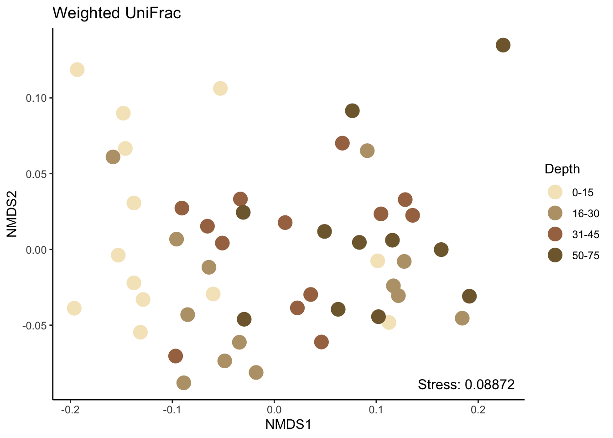
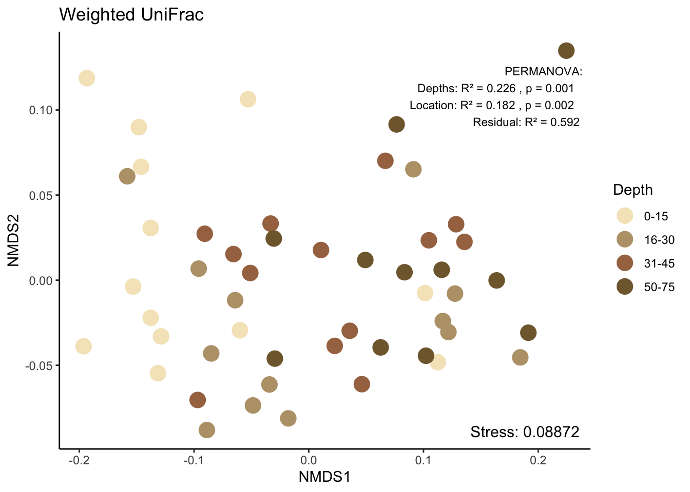
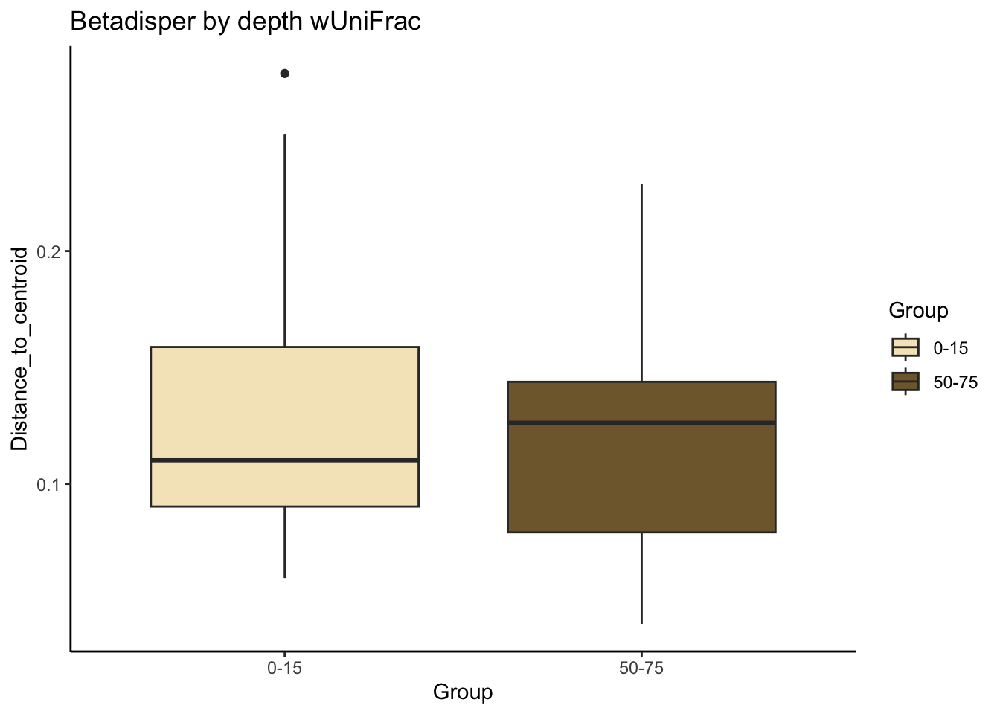
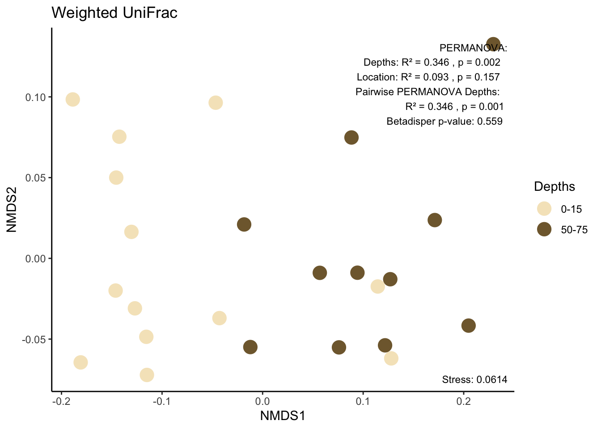
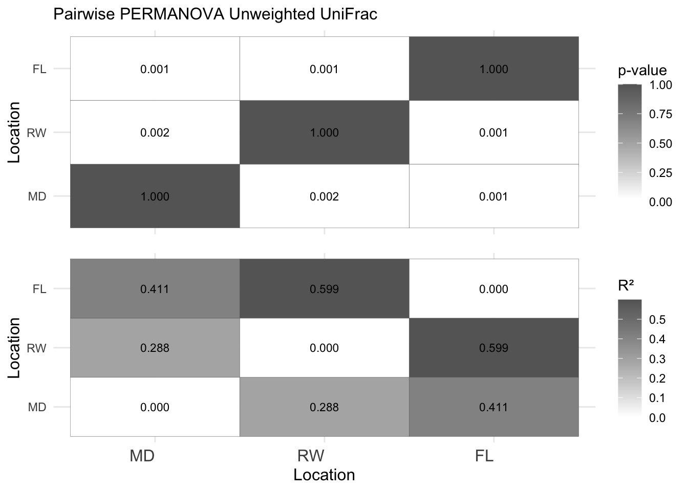
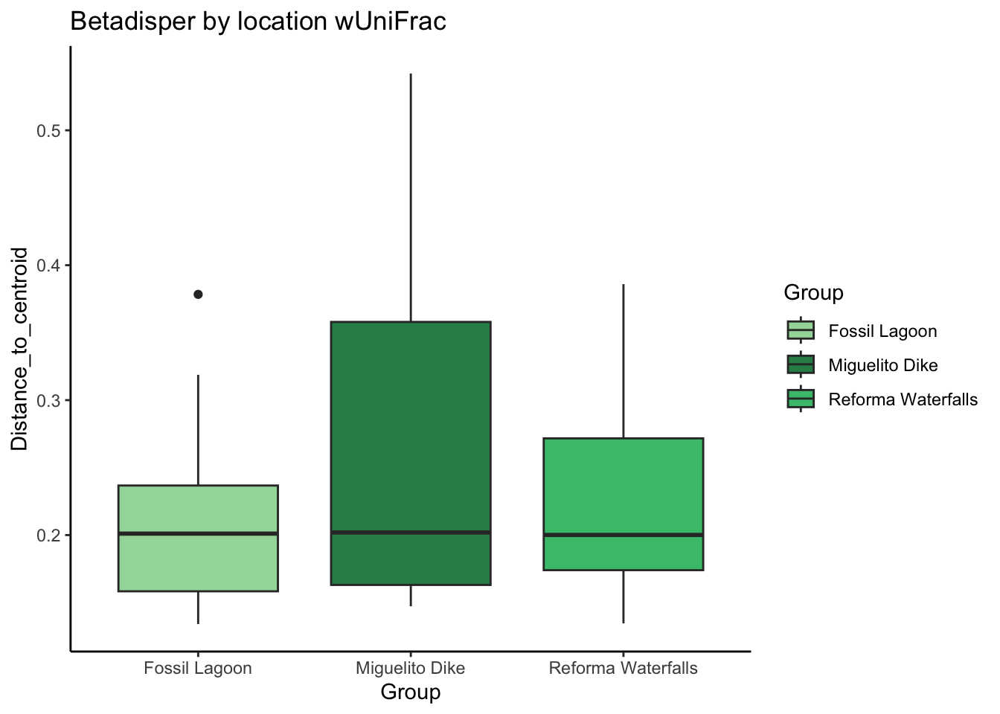
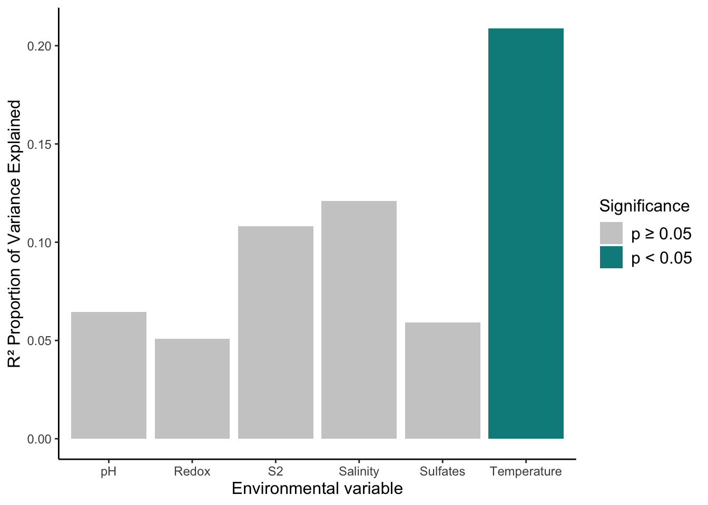
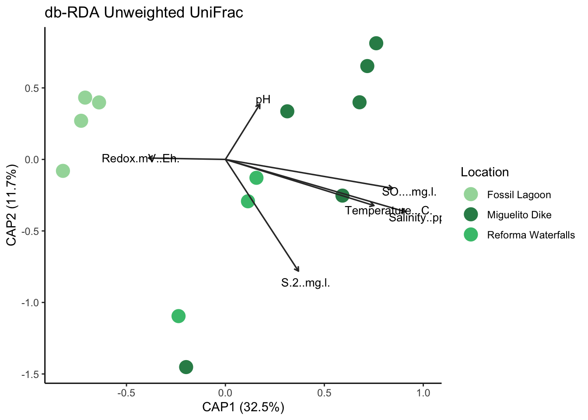

Beta diversity
Load libraries and prepare data
#load data
ps <- readRDS("rds/interior_mangroves/phyloseq.rds")# Extract data from phyloseq object
#library(phyloseq)
otu_data <- otu_table(ps, taxa_are_rows = TRUE)
metadata <- as(sample_data(ps), "data.frame")
sample_data <- data.frame(sample_data(ps))01. Weighted Unifrac
01.1 All samples
01.1.1 Get distances and stress
Run 0 stress 0.0887
Run 1 stress 0.135
Run 2 stress 0.0924
Run 3 stress 0.0924
Run 4 stress 0.0887
... New best solution
... Procrustes: rmse 6.43e-05 max resid 0.000367
... Similar to previous best
Run 5 stress 0.0943
Run 6 stress 0.0924
Run 7 stress 0.116
Run 8 stress 0.0967
Run 9 stress 0.0943
Run 10 stress 0.121
Run 11 stress 0.0943
Run 12 stress 0.0924
Run 13 stress 0.117
Run 14 stress 0.0941
Run 15 stress 0.0941
Run 16 stress 0.0887
... Procrustes: rmse 0.00011 max resid 0.000666
... Similar to previous best
Run 17 stress 0.0887
... Procrustes: rmse 6.31e-05 max resid 0.000392
... Similar to previous best
Run 18 stress 0.0887
... Procrustes: rmse 6.78e-05 max resid 0.000404
... Similar to previous best
Run 19 stress 0.0887
... Procrustes: rmse 3.66e-05 max resid 2e-04
... Similar to previous best
Run 20 stress 0.0887
... New best solution
... Procrustes: rmse 5.51e-05 max resid 0.000327
... Similar to previous best
*** Best solution repeated 1 times# stress variable
var_stress_nmds_wu <- round(nmds_wunifrac$stress, 5)
var_stress_nmds_wu[1] 0.088701.1.2 Plot
# Convert Depth to factor
sample_data(ps)$Depths <- factor(sample_data(ps)$Depths, levels = c("0-15", "16-30", "31-45", "50-75"))
#plot
nmds_wu <- plot_ordination(ps, nmds_wunifrac, color = "Depths") + theme_classic() +
labs(col = "Depth") +
labs(title="Weighted UniFrac") +
geom_point(size=5) +
scale_fill_manual(values = depth_colors)+
scale_color_manual(values = depth_colors)
nmds_wu <- nmds_wu +
annotate("text", x = Inf, y = -Inf, label = paste("Stress:", var_stress_nmds_wu),
hjust = 1.1, vjust = -1.1, size = 4)
#show
nmds_wu
01.1.3 PERMANOVA
To test the effects of Depth and Location on the Weighted Unifrac dissimilarity, a PERMANOVA analysis was conducted using adonis2.
# UniFrac
wunifrac_distances <- UniFrac(ps, weighted = TRUE)
# Convert distances 'dist' class
wunifrac_distances <- as.dist(wunifrac_distances)
# PERMANOVA
set.seed(123)
adonis2_wunifrac <- adonis2(
wunifrac_distances ~ Depths + Location,
data = metadata,
permutations = 999,
strata = metadata$ID,
by = "terms")
# Results
perm_results <- data.frame(
Term = c("Depth_cm", "Location", "Residual"),
R2 = c(adonis2_wunifrac$R2[1], adonis2_wunifrac$R2[2], adonis2_wunifrac$R2[3]),
p_value = c(adonis2_wunifrac$`Pr(>F)`[1], adonis2_wunifrac$`Pr(>F)`[2], NA))
perm_results Term R2 p_value
1 Depth_cm 0.226 0.001
2 Location 0.182 0.002
3 Residual 0.592 NA01.1.4 Plot with permanova
# add to plot
nmds_wu <- nmds_wu +
annotate(
"text", x = Inf, y = Inf, label = perm_text,
hjust = 1.1, vjust = 1.6, size = 3, color = "black"
)
# Mostrar el gráfico
nmds_wu
ggsave("Figures/interior_mangroves/nmds_wunifrac_all.pdf", nmds_wu, width = 20, height = 15, units = "cm")Warning: No shared levels found between `names(values)` of the manual scale and the
data's fill values.01.2 Surface and deep samples
01.2.1 Filter depths
# Filter data 0-15 y 50-75
sample_data(ps)$Depths_fltr <- factor(sample_data(ps)$Depths, levels = c("0-15", "50-75"))
ps_fltr <- prune_samples(sample_data(ps)$Depths_fltr %in% c("0-15", "50-75"), ps)
metadata_fltr <- as(sample_data(ps_fltr), "data.frame")01.2.2 Get distances and stress
# Distances
set.seed(123)
nmds_wunifrac_fltr <- ordinate(ps_fltr, method = "NMDS", distance = "wunifrac")Run 0 stress 0.0614
Run 1 stress 0.0614
... Procrustes: rmse 1.38e-05 max resid 4.53e-05
... Similar to previous best
Run 2 stress 0.0614
... Procrustes: rmse 1.04e-05 max resid 4.14e-05
... Similar to previous best
Run 3 stress 0.0728
Run 4 stress 0.0728
Run 5 stress 0.0728
Run 6 stress 0.0614
... Procrustes: rmse 2e-05 max resid 7.56e-05
... Similar to previous best
Run 7 stress 0.0879
Run 8 stress 0.0728
Run 9 stress 0.0879
Run 10 stress 0.0728
Run 11 stress 0.1
Run 12 stress 0.0614
... New best solution
... Procrustes: rmse 2.65e-06 max resid 7.37e-06
... Similar to previous best
Run 13 stress 0.0614
... Procrustes: rmse 2.63e-05 max resid 9.25e-05
... Similar to previous best
Run 14 stress 0.0728
Run 15 stress 0.0614
... Procrustes: rmse 4.99e-05 max resid 0.000154
... Similar to previous best
Run 16 stress 0.0614
... Procrustes: rmse 2.23e-05 max resid 8.27e-05
... Similar to previous best
Run 17 stress 0.0728
Run 18 stress 0.0879
Run 19 stress 0.1
Run 20 stress 0.105
*** Best solution repeated 4 times# stress
var_stress_nmds_wu_fltr <- round(nmds_wunifrac_fltr$stress, 5)01.2.3 NMDS plot
# Plot NMDS
nmds_wu_fltr <- plot_ordination(ps_fltr, nmds_wunifrac_fltr, color = "Depths") +
theme_classic() +
labs(col = "Depths") +
labs(title = "Weighted UniFrac") +
geom_point(size = 5) +
scale_fill_manual(values = depth_colors) +
scale_color_manual(values = depth_colors)
# add stress
nmds_wu_fltr <- nmds_wu_fltr +
annotate("text", x = Inf, y = -Inf, label = paste("Stress:", var_stress_nmds_wu_fltr),
hjust = 1.1, vjust = -1.2, size = 3)01.2.4 PERMANOVA
# UniFrac distances
wunifrac_distances_fltr <- UniFrac(ps_fltr, weighted = TRUE)
# Convert 'dist' class
wunifrac_distances_fltr <- as.dist(wunifrac_distances_fltr)
# PERMANOVA
set.seed(123)
adonis2_wunifrac_fltr <- adonis2(
wunifrac_distances_fltr ~ Depths_fltr + Location,
data = metadata_fltr,
permutations = 999,
strata = metadata_fltr$ID,
by = "terms")Set of permutations < 'minperm'. Generating entire set.# Results
perm_results_fltr <- data.frame(
Term = c("Depth_cm", "Location", "Residual"),
R2 = c(adonis2_wunifrac_fltr$R2[1], adonis2_wunifrac_fltr$R2[2], adonis2_wunifrac_fltr$R2[3]),
p_value = c(adonis2_wunifrac_fltr$`Pr(>F)`[1], adonis2_wunifrac_fltr$`Pr(>F)`[2], NA))
perm_results_fltr Term R2 p_value
1 Depth_cm 0.3465 0.002
2 Location 0.0932 0.157
3 Residual 0.5604 NA01.2.5 Post-hoc adonis
To test differences between the Mangrove systems a Post-hoc pairwise PERMANOVA was conducted using pairwise.adonis
01.2.6 Pairwise adonis
## Post-hoc Depths
# Pairwise PERMANOVA Weighted UniFrac
set.seed(123)
pairwise_adonis_fltr <- pairwiseAdonis::pairwise.adonis2(
wunifrac_distances_fltr ~ Depths_fltr,
data = metadata_fltr,
permutations = 999)
# show
pairwise_adonis_fltr$parent_call
[1] "wunifrac_distances_fltr ~ Depths_fltr , strata = Null , permutations 999"
$`0-15_vs_50-75`
Df SumOfSqs R2 F Pr(>F)
Model 1 0.237 0.346 11.7 0.001 ***
Residual 22 0.447 0.654
Total 23 0.685 1.000
---
Signif. codes: 0 '***' 0.001 '**' 0.01 '*' 0.05 '.' 0.1 ' ' 1
attr(,"class")
[1] "pwadstrata" "list" 01.2.7 Beta disper
Given the pairwise PERMANOVA showed a highly significant result (p = 0.001), it is prudent to calculate the beta dispersion to validate that this result reflects real differences in microbial community composition between “0-15” and “50-75,” and not just differences in variability within each depth. In addition, R² = 0.346 indicates a moderate effect, but the 65.4% residual variance suggests unexplained variability, which could include differences in dispersion.
# Beta disp
beta_disp_fltr <- betadisper(wunifrac_distances_fltr, metadata_fltr$Depths_fltr)
# Significant test
anova_beta_disp_fltr <- anova(beta_disp_fltr)
anova_beta_disp_fltrAnalysis of Variance Table
Response: Distances
Df Sum Sq Mean Sq F value Pr(>F)
Groups 1 0.0013 0.00129 0.35 0.56
Residuals 22 0.0807 0.00367 # Show dispersion by group
beta_disp_fltr$group.distances 0-15 50-75
0.132 0.117 # boxplot betadisper
beta_data_fltr <- data.frame(
Group = metadata_fltr$Depths_fltr,
Distance_to_centroid = beta_disp_fltr$distances
)
beta_plot_fltr <- ggplot(beta_data_fltr, aes(x = Group, y = Distance_to_centroid, fill = Group)) +
geom_boxplot() +
scale_fill_manual(values = depth_colors) +
labs(title = "Betadisper by depth wUniFrac") +
theme_classic()
#show
beta_plot_fltr
Save boxplot
ggsave("Figures/interior_mangroves/Betadisper_depth.pdf", beta_plot_fltr, bg='transparent', width = 4, height = 4.5)01.2.8 Plot with PERMANOVA, pairwise PERMANOVA and Betadisper
# Añadir texto de PERMANOVA y dispersión beta
nmds_wu_fltr <- nmds_wu_fltr +
annotate(
"text", x = Inf, y = Inf,
label = paste(perm_text_fltr, pairwise_text_fltr, beta_text_fltr, sep = "\n"),
hjust = 1.1, vjust = 1.2, size = 3, color = "black")
nmds_wu_fltr
save
ggsave("Figures/interior_mangroves/NMDS_wu_depth.pdf", nmds_wu_fltr, bg='transparent', width = 6, height = 4.5)Warning: No shared levels found between `names(values)` of the manual scale and the
data's fill values.02. Unweighted UniFrac
02.1 Get distances and stress
## Unweighted UniFrac
nmds_unifrac <- ordinate(ps, method = "NMDS", distance = "unifrac")Run 0 stress 0.0783
Run 1 stress 0.0783
... New best solution
... Procrustes: rmse 0.000102 max resid 0.000654
... Similar to previous best
Run 2 stress 0.0857
Run 3 stress 0.0976
Run 4 stress 0.0929
Run 5 stress 0.0941
Run 6 stress 0.0964
Run 7 stress 0.0999
Run 8 stress 0.403
Run 9 stress 0.112
Run 10 stress 0.0941
Run 11 stress 0.0999
Run 12 stress 0.0783
... Procrustes: rmse 0.000441 max resid 0.00284
... Similar to previous best
Run 13 stress 0.0964
Run 14 stress 0.0929
Run 15 stress 0.0975
Run 16 stress 0.0783
... Procrustes: rmse 6.12e-05 max resid 0.000392
... Similar to previous best
Run 17 stress 0.104
Run 18 stress 0.0783
... Procrustes: rmse 0.00053 max resid 0.00341
... Similar to previous best
Run 19 stress 0.0857
Run 20 stress 0.1
*** Best solution repeated 4 times# stress variable
var_stress_nmds_u <- round(nmds_unifrac$stress, 5)
var_stress_nmds_u[1] 0.078302.2 NMDS
# Reorder 'Location'
sample_data(ps)$Location <- factor(sample_data(ps)$Location, levels = c("Fossil Lagoon", "Reforma Waterfalls", "Miguelito Dike"))
# NMDS
nmds_u <- plot_ordination(ps, nmds_unifrac, color = "Location") +
theme_classic() +
labs(col = "Location", title = "Unweighted UniFrac") +
geom_point(size = 5) +
scale_fill_manual(values = loc_colors) +
scale_color_manual(values = loc_colors) +
annotate("text", x = Inf, y = -Inf,
label = paste("Stress:", var_stress_nmds_u),
hjust = 1.1, vjust = -1.3, size = 3)02.3 PERMANOVA
# UniFrac distances
unifrac_distances <- UniFrac(ps, weighted = FALSE)
# Convert 'dist' class
unifrac_distances <- as.dist(unifrac_distances)
# PERMANOVA
set.seed(123)
adonis2_unifrac <- adonis2(
unifrac_distances ~ Location + Depths,
data = metadata,
permutations = 999,
strata = metadata$ID,
by = "terms")
# Results
perm_results <- data.frame(
Term = c("Location","Depths", "Residual"),
R2 = c(adonis2_unifrac$R2[1], adonis2_unifrac$R2[2], adonis2_unifrac$R2[3]),
p_value = c(adonis2_unifrac$`Pr(>F)`[1], adonis2_unifrac$`Pr(>F)`[2], NA))
perm_results Term R2 p_value
1 Location 0.301 0.001
2 Depths 0.136 0.001
3 Residual 0.563 NA02.4 Post-hoc adonis
To test differences between the Mangrove systems a Post-hoc pairwise PERMANOVA was conducted using pairwise.adonis
02.5 Pairwise adonis
## Post-hoc Location
# Pairwise PERMANOVA Weighted UniFrac
set.seed(123)
pairwise_adonis_u <- pairwiseAdonis::pairwise.adonis2(
unifrac_distances ~ Location + Depths,
data = metadata,
permutations = 999)
# show
pairwise_adonis_u$parent_call
[1] "unifrac_distances ~ Location + Depths , strata = Null , permutations 999"
$`Miguelito Dike_vs_Reforma Waterfalls`
Df SumOfSqs R2 F Pr(>F)
Model 4 0.93 0.288 3.14 0.002 **
Residual 31 2.30 0.712
Total 35 3.23 1.000
---
Signif. codes: 0 '***' 0.001 '**' 0.01 '*' 0.05 '.' 0.1 ' ' 1
$`Miguelito Dike_vs_Fossil Lagoon`
Df SumOfSqs R2 F Pr(>F)
Model 4 1.60 0.411 5.75 0.001 ***
Residual 33 2.29 0.589
Total 37 3.89 1.000
---
Signif. codes: 0 '***' 0.001 '**' 0.01 '*' 0.05 '.' 0.1 ' ' 1
$`Reforma Waterfalls_vs_Fossil Lagoon`
Df SumOfSqs R2 F Pr(>F)
Model 4 1.148 0.599 7.86 0.001 ***
Residual 21 0.767 0.401
Total 25 1.915 1.000
---
Signif. codes: 0 '***' 0.001 '**' 0.01 '*' 0.05 '.' 0.1 ' ' 1
attr(,"class")
[1] "pwadstrata" "list" 02.6 Extract p-values
# Define abbrevs
location_abbrevs <- c(
"Miguelito Dike" = "MD",
"Reforma Waterfalls" = "RW",
"Fossil Lagoon" = "FL")
# Extract values
locations <- unique(metadata$Location)
p_matrix <- matrix(NA, nrow = length(locations), ncol = length(locations),
dimnames = list(locations, locations))
r2_matrix <- matrix(NA, nrow = length(locations), ncol = length(locations),
dimnames = list(locations, locations))
for (comp in names(pairwise_adonis_u)[-1]) { # Exclude 'parent_call'
pair <- strsplit(comp, "_vs_")[[1]]
loc1 <- pair[1]
loc2 <- pair[2]
p_matrix[loc1, loc2] <- pairwise_adonis_u[[comp]]$`Pr(>F)`[1]
p_matrix[loc2, loc1] <- pairwise_adonis_u[[comp]]$`Pr(>F)`[1] # Simetric
r2_matrix[loc1, loc2] <- pairwise_adonis_u[[comp]]$R2[1]
r2_matrix[loc2, loc1] <- pairwise_adonis_u[[comp]]$R2[1] # Sim
}
diag(p_matrix) <- 1 # p-value = 1
diag(r2_matrix) <- 0 # R² = 0
# abbrevs in matrix
abbrev_locations <- location_abbrevs[locations]
names(abbrev_locations) <- NULL
dimnames(p_matrix) <- list(abbrev_locations, abbrev_locations)
dimnames(r2_matrix) <- list(abbrev_locations, abbrev_locations)
# Convert to long format
p_melt <- melt(p_matrix, na.rm = TRUE)
colnames(p_melt) <- c("Location1", "Location2", "p_value")
r2_melt <- melt(r2_matrix, na.rm = TRUE)
colnames(r2_melt) <- c("Location1", "Location2", "R2")02.7 Heatmap
# Heatmap of p-values
heatmap_plot_p <- ggplot(p_melt, aes(x = Location1, y = Location2, fill = p_value)) +
geom_tile(color = "gray40") +
scale_fill_gradient2(low = "white", mid = "white", high = "gray40",
midpoint = 0.025, limits = c(0, 1),
name = "p-value") +
geom_text(aes(label = sprintf("%.3f", p_value)), color = "black", size = 3) +
theme_minimal() +
labs(title = "Pairwise PERMANOVA Unweighted UniFrac", y = "Location") +
theme(axis.text.x = element_blank(), # Ocult axis x
axis.title.x = element_blank(),
axis.title.y = element_text(size = 12),
plot.title = element_text(size = 12))
# Heatmap de R²
heatmap_plot_r2 <- ggplot(r2_melt, aes(x = Location1, y = Location2, fill = R2)) +
geom_tile(color = "gray40") +
scale_fill_gradient(low = "white", high = "gray40",
name = "R²") +
geom_text(aes(label = sprintf("%.3f", R2)), color = "black", size = 3) +
theme_minimal() +
labs(title = NULL,
x = "Location", y = "Location") +
theme(axis.text.x = element_text(angle = 0, hjust = 1, size = 12),
axis.title = element_text(size = 12),
plot.title = element_text(size = 12))
# join cowplot
combined_heatmap <- plot_grid(
heatmap_plot_p, heatmap_plot_r2,
nrow = 2, align = "v", axis = "lr"
)
# show
combined_heatmap
save
ggsave("Figures/interior_mangroves/pairwiseheatmap.pdf", combined_heatmap, bg='transparent', width = 4, height = 4.5)02.8 Beta disper
Given the pairwise PERMANOVA showed a highly significant results, it is prudent to calculate the beta dispersion to validate that this result reflects real differences in microbial community composition between mangrove location and not just differences in variability within mangrove site.
# Beta disp
beta_disp_u <- betadisper(unifrac_distances, metadata$Location)
anova_beta_disp_u <- anova(beta_disp_u)
# Show dispersion by group
beta_disp_u$group.distances Fossil Lagoon Miguelito Dike Reforma Waterfalls
0.216 0.270 0.231 # boxplot betadisper
beta_data <- data.frame(
Group = metadata$Location,
Distance_to_centroid = beta_disp_u$distances
)
beta_plot <- ggplot(beta_data, aes(x = Group, y = Distance_to_centroid, fill = Group)) +
geom_boxplot() +
scale_fill_manual(values = loc_colors) +
labs(title = "Betadisper by location wUniFrac") +
theme_classic()
#show
beta_plot
ggsave("Figures/interior_mangroves/Betadisper_location.pdf", beta_plot, bg='transparent', width = 5.5, height = 4)02.9 Plot with PERMANOVA, pairwise PERMANOVA and Betadisper
Save
ggsave("Figures/interior_mangroves/NMDS_u_location.pdf", nmds_u, bg='transparent', width = 6, height = 4.5)Warning: No shared levels found between `names(values)` of the manual scale and the
data's fill values.03. dbRDA
03.1 Load an prepare data
# read data
phychem <- read.csv("data/physicochemists.csv", stringsAsFactors = FALSE)
# Rename specific levels
phychem <- phychem %>%
mutate(`Locality` = case_when(
Locality == "El Cacahuate" ~ "Fossil Lagoon",
Locality == "La Piedad" ~ "Reforma Waterfalls",
Locality == "Dique Miguelito" ~ "Miguelito Dike",
TRUE ~ Locality))
# extract intersticial samples 30 cm
ps_phychem30cm <- prune_samples(sample_data(ps)$Depths == "31-45", ps)
# Extract metadata from filter object
metadata_phychem30cm <- as.data.frame(sample_data(ps_phychem30cm))
# convert to data frame
metadata_phychem30cm_df <- data.frame(as(sample_data(ps_phychem30cm),
"data.frame"))
# join
combined_metadata <- merge(metadata_phychem30cm_df, phychem,
by = "Sample", all.x = TRUE)
# rownames
rownames(combined_metadata) <- combined_metadata$Sample
# Convert to sample_data
sample_data_combined <- sample_data(combined_metadata)
# save into phyloseq object
sample_data(ps_phychem30cm) <- sample_data_combined03.2 Get distances
# Calcular las distancias Unifrac no ponderadas
unifrac_distances_phychem30cm<- distance(ps_phychem30cm, method = "unifrac", weighted = FALSE)03.3 Calculate dbRDA
# Convert distance matrix to vegdist object
unifrac_vegdist_phychem30cm <- as.dist(unifrac_distances_phychem30cm)
# db-RDA
dbrda_result <- capscale(unifrac_vegdist_phychem30cm ~ Temperature...C. +
Salinity..ppm. + pH + Redox.mV..Eh. +
S.2..mg.l. + SO....mg.l., data = phychem)
# summary
summary(dbrda_result)
Call:
capscale(formula = unifrac_vegdist_phychem30cm ~ Temperature...C. + Salinity..ppm. + pH + Redox.mV..Eh. + S.2..mg.l. + SO....mg.l., data = phychem)
Partitioning of squared Unknown distance:
Inertia Proportion
Total 0.995 1.000
Constrained 0.609 0.612
Unconstrained 0.385 0.388
Eigenvalues, and their contribution to the squared Unknown distance
Importance of components:
CAP1 CAP2 CAP3 CAP4 CAP5 CAP6 MDS1 MDS2
Eigenvalue 0.324 0.117 0.0814 0.0403 0.0263 0.0207 0.261 0.0425
Proportion Explained 0.325 0.117 0.0818 0.0405 0.0265 0.0208 0.263 0.0427
Cumulative Proportion 0.325 0.443 0.5247 0.5652 0.5916 0.6124 0.875 0.9180
MDS3 MDS4 MDS5 MDS6
Eigenvalue 0.0261 0.0242 0.0180 0.0133
Proportion Explained 0.0262 0.0244 0.0181 0.0134
Cumulative Proportion 0.9442 0.9685 0.9866 1.0000
Accumulated constrained eigenvalues
Importance of components:
CAP1 CAP2 CAP3 CAP4 CAP5 CAP6
Eigenvalue 0.324 0.117 0.0814 0.0403 0.0263 0.0207
Proportion Explained 0.531 0.192 0.1336 0.0661 0.0432 0.0340
Cumulative Proportion 0.531 0.723 0.8567 0.9228 0.9660 1.000003.4 Get significance
# Significance
anova_axes <- anova(dbrda_result, by = "axis",
permutations = 999)
anova_axesPermutation test for capscale under reduced model
Forward tests for axes
Permutation: free
Number of permutations: 999
Model: capscale(formula = unifrac_vegdist_phychem30cm ~ Temperature...C. + Salinity..ppm. + pH + Redox.mV..Eh. + S.2..mg.l. + SO....mg.l., data = phychem)
Df SumOfSqs F Pr(>F)
CAP1 1 0.324 5.04 0.14
CAP2 1 0.117 1.82 0.75
CAP3 1 0.081 1.27 0.84
CAP4 1 0.040 0.63 0.96
CAP5 1 0.026 0.41 0.97
CAP6 1 0.021 0.32 0.97
Residual 6 0.385 # Significance by variable
anova_terms <- anova(dbrda_result, by = "terms",
permutations = 999)
anova_termsPermutation test for capscale under reduced model
Terms added sequentially (first to last)
Permutation: free
Number of permutations: 999
Model: capscale(formula = unifrac_vegdist_phychem30cm ~ Temperature...C. + Salinity..ppm. + pH + Redox.mV..Eh. + S.2..mg.l. + SO....mg.l., data = phychem)
Df SumOfSqs F Pr(>F)
Temperature...C. 1 0.208 3.23 0.016 *
Salinity..ppm. 1 0.120 1.87 0.112
pH 1 0.064 1.00 0.433
Redox.mV..Eh. 1 0.051 0.79 0.565
S.2..mg.l. 1 0.108 1.67 0.151
SO....mg.l. 1 0.059 0.92 0.470
Residual 6 0.385
---
Signif. codes: 0 '***' 0.001 '**' 0.01 '*' 0.05 '.' 0.1 ' ' 1# variance by each axis
summary(dbrda_result)$cont$importanceImportance of components:
CAP1 CAP2 CAP3 CAP4 CAP5 CAP6 MDS1 MDS2
Eigenvalue 0.324 0.117 0.0814 0.0403 0.0263 0.0207 0.261 0.0425
Proportion Explained 0.325 0.117 0.0818 0.0405 0.0265 0.0208 0.263 0.0427
Cumulative Proportion 0.325 0.443 0.5247 0.5652 0.5916 0.6124 0.875 0.9180
MDS3 MDS4 MDS5 MDS6
Eigenvalue 0.0261 0.0242 0.0180 0.0133
Proportion Explained 0.0262 0.0244 0.0181 0.0134
Cumulative Proportion 0.9442 0.9685 0.9866 1.000003.5 PERMANOVA
# PERMANOVA
set.seed(123)
permanova_result <- adonis2(unifrac_distances_phychem30cm ~ Temperature...C. + Salinity..ppm. + pH +
Redox.mV..Eh. + S.2..mg.l. + SO....mg.l.,
data = phychem, by="terms", permutations = 999)
# show
permanova_resultPermutation test for adonis under reduced model
Terms added sequentially (first to last)
Permutation: free
Number of permutations: 999
adonis2(formula = unifrac_distances_phychem30cm ~ Temperature...C. + Salinity..ppm. + pH + Redox.mV..Eh. + S.2..mg.l. + SO....mg.l., data = phychem, permutations = 999, by = "terms")
Df SumOfSqs R2 F Pr(>F)
Temperature...C. 1 0.208 0.209 3.23 0.017 *
Salinity..ppm. 1 0.120 0.121 1.87 0.122
pH 1 0.064 0.065 1.00 0.406
Redox.mV..Eh. 1 0.051 0.051 0.79 0.565
S.2..mg.l. 1 0.108 0.108 1.67 0.172
SO....mg.l. 1 0.059 0.059 0.92 0.459
Residual 6 0.385 0.388
Total 12 0.995 1.000
---
Signif. codes: 0 '***' 0.001 '**' 0.01 '*' 0.05 '.' 0.1 ' ' 103.6 PERMANOVA Plot
# Extract PERMANOVA results
permanova_df <- data.frame(
Variable = rownames(permanova_result)[1:(nrow(permanova_result)-2)],
R2 = permanova_result$R2[1:(nrow(permanova_result)-2)],
p_value = permanova_result$`Pr(>F)`[1:(nrow(permanova_result)-2)])
# names
var_abbrevs <- c(
"Temperature...C." = "Temperature",
"Salinity..ppm." = "Salinity",
"pH" = "pH",
"Redox.mV..Eh." = "Redox",
"S.2..mg.l." = "S2",
"SO....mg.l." = "Sulfates")
permanova_df$Variable <- var_abbrevs[permanova_df$Variable]# plot
permanova_plot <- ggplot(permanova_df, aes(x = Variable,
y = R2, fill = p_value < 0.05)) +
geom_bar(stat = "identity") +
scale_fill_manual(values = c("TRUE" = "cyan4", "FALSE" = "gray80"),
labels = c("TRUE" = "p < 0.05", "FALSE" = "p ≥ 0.05")) +
labs(x = "Environmental variable",
y = "R² Proportion of Variance Explained",
fill = "Significance") +
theme_classic() +
theme(
axis.text = element_text(size = 9),
axis.title = element_text(size = 12),
legend.text = element_text(size = 12),
legend.title = element_text(size = 12),
plot.title = element_text(size = 12))
# show
permanova_plot
ggsave("Figures/interior_mangroves/Physicochemyc_Significance.pdf", permanova_plot, bg='transparent', width = 5.7, height = 4)Warning in grid.Call.graphics(C_text, as.graphicsAnnot(x$label), x$x, x$y, :
for 'p ≥ 0.05' in 'mbcsToSbcs': >= substituted for ≥ (U+2265)03.7 dbRDA Plot
# Extract site scores
scores_samples <- scores(dbrda_result, display = "sites")
# Convert to data.frame
scores_df <- data.frame(scores_samples, Location = phychem$Locality)
# Extra environmental scores
env_scores <- scores(dbrda_result, display = "bp")
env_scores_df <- data.frame(env_scores)
env_scores_df$Variable <- rownames(env_scores_df)
# Explain variance percentage
explained_var <- summary(dbrda_result)$cont$importance[2, 1:2] * 100 # CAP1 and CAP2
#plot
capphychem_plot <- ggplot(scores_df, aes(x = CAP1, y = CAP2,
color = Location)) + geom_point(size = 5) + theme_classic() +
labs(
col = "Location",
title = "db-RDA Unweighted UniFrac",
x = paste0("CAP1 (", round(explained_var[1], 1), "%)"),
y = paste0("CAP2 (", round(explained_var[2], 1), "%)")
) +
scale_color_manual(values = loc_colors) +
geom_segment(data = env_scores_df, aes(
x = 0, y = 0, xend = CAP1, yend = CAP2),
arrow = arrow(length = unit(0.15, "cm")),
color = "gray20", size = 0.6) +
# environmental variables
geom_text(data = env_scores_df, aes(x = CAP1 * 1.1,
y = CAP2 * 1.1, label = Variable),
color = "black", size = 3.5) +
theme(legend.position = "right")
capphychem_plot
#save
ggsave("Figures/interior_mangroves/dbRDA.pdf", capphychem_plot, width = 6, height = 4)